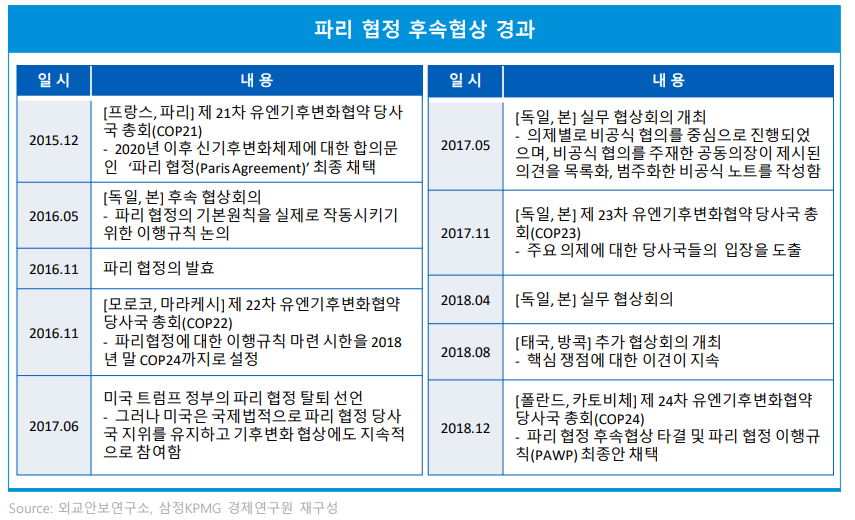

MIT Technology Review
<탈탄소화>
2.탈탄소화 개념의 기원

- 1998년 기후변화에 관한 정부간 협의체(IPCC)가 설립되는 당시 국제적 차원의 조치로서 처음 언급되었다. 이후 2016년 발효된 파리기후변화협약((Paris Agreement)에서는 탄소배출을 제한하여 기후변화의 위협과 영향을 실질적으로 줄이려는 시도로 구체화 되었으며, 2019년 9월 UN기후행동정상회의 이후 121개 국가가 기후목표 상향동맹에 가입하면서 2050 탄소중립 글로벌 의제로 정착되었다.
참고문헌